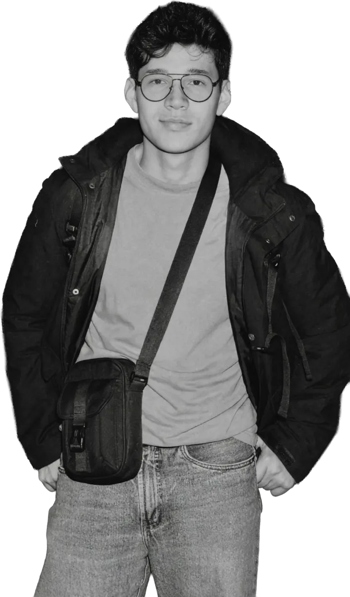

Sobre mí
hola, soyAlejandro
Diseñador UX/UI. Uno la lógica del diseño industrial y urbano con el diseño digital para crear productos claros, accesibles y útiles.

Diseño para que lo complejo se vuelva simple.
Soy diseñador industrial y magíster en diseño urbano. Antes de llegar a UX/UI dirigí la marca y los equipos creativos de Confía SDC, MSEG (Canadá) y VR Ingeniería, y diseñé vitrinas para TOTTO y el Atlas Edificatoria de CAMACOL. Hoy, en LinkTIC, diseño productos web y móviles, investigo con usuarios y creé el design system que comparten diseño, desarrollo y producto.
Del diseño industrial traigo el prototipado y la ergonomía; del urbanismo, pensar en sistemas donde conviven personas muy distintas; de la marca, coherencia y criterio visual. Trabajo en Figma con design systems y prototipos, y pruebo con usuarios siempre que el proyecto lo permite. Uso IA para sintetizar investigación, automatizar el design system y prototipar en código, y documento cada proyecto en bóvedas de conocimiento.
— Formación · 2020
diseñador industrial
Universidad Nacional de Colombia · Producto, ergonomía y prototipado.
— Formación · 2023
magíster en diseño urbano
Universidad Nacional de Colombia · Ciudad, espacio público y movilidad.
— Formación · 2025
diseñador ux/ui
Google · Coursera · Investigación con usuarios, prototipado y pruebas de usabilidad.
— Habilidades
— Taller y prototipado
— Idiomas
español
Nativo
english
B1
— Reconocimiento · 2020
Diseño de Mobiliario Urbano
Conferencia · Universidad Justo Sierra, México
— Reconocimiento · 2018
Intermodalidad
Ponencia · XX Congreso Panamericano de Ingeniería de Tránsito, Transporte y Logística (PANAM), Medellín
— 2025 — Hoy
Diseñador UX/UI
LinkTIC · Bogotá
Más de 10 proyectos de gobierno, educación, finanzas y herramientas internas: interfaces accesibles, investigación con usuarios y design systems junto a desarrollo y producto.
— 2023 — 2024
Coordinador de Marketing y Diseñador Sr
VR Ingeniería · Bogotá
Lideré un equipo creativo de 4 a 6 personas, coordiné agencias externas y rediseñé la UX/UI del sitio web institucional.
— 2020 — 2023
Director de Marca
MSEG · Ontario, Canadá · Remoto
Identidad visual, comunicación y UX/UI del sitio web institucional con enfoque en accesibilidad.
Contacto
hablemos
¿Te gustó algo de lo que viste, tienes una idea o quieres conversar de diseño? Escríbeme.
Escríbeme